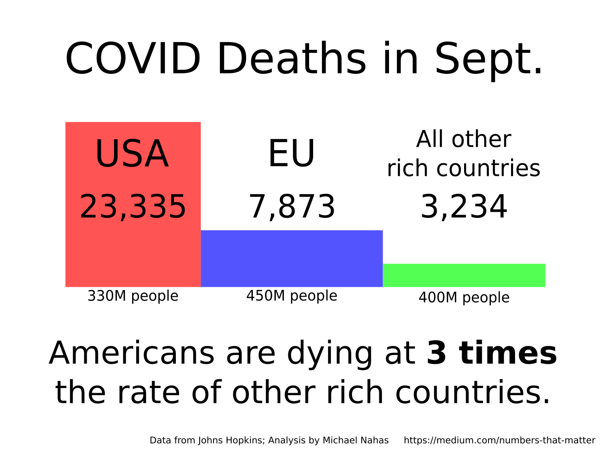

With the coming election in the United States, I wanted to know how my country was doing against the COVID pandemic. I found that Americans are dying at 5 times the rate of other rich countries. Despite being the most prepared country for a pandemic, we are having one of the worse results.

Actual, we’re doing 3 times worse than the EU and 5 times worse than the average rate of other rich countries. It “felt righter” to say 3 in the graphic. Created using data from Johns Hopkins University.
There are many ways to measure how countries are doing against the COVID pandemic. I felt the best way was to use deaths-per-entire-population in the last month. I chose deaths because dying is the worse outcome and it is hard for a government to hide a death. (There is not just the body, but government records, funeral announcements, etc.) I chose per-population, because I wanted to compare the large USA against smaller countries. Lastly, I chose to use data from the most recent month because that would tell me how we’re doing “now”, while also averaging out the noise.
I compared the USA only against other rich countries, because I had doubts about the numbers from poorer countries. I defined “rich” as making at least 1/4 the nominal GDP-per-person of the USA. Besides the EU, this includes countries you’d expect, like Japan, the U.K., Canada, Australia, Sweden, etc..
The USA was the 3rd worst rich country when measured by COVID-deaths-per-population in September 2020. The only countries worse than the USA were the Bahamas — which had a low rate before they started admitting American tourists — and Israel — which decided the situation was so bad that they’re having another lockdown.
Sweden has been talked about a lot, so it is worth going into some detail. Sweden’s rate was higher than the USA’s in June of 2020. But, Sweden improved and the USA did not. In September, the USA’s COVID-deaths-per-population was more than 8 times that of Sweden. If we were doing as well as Sweden, we would have had 2,786 people die in September, instead of 23,335.
My numbers support this statement by the Editors of the New England Journal of Medicine: “… although it is impossible to project the precise number of additional American lives lost because of weak and inappropriate government policies, it is at least in the tens of thousands …”
I cannot express how saddened and embarrassed I am by my country’s outcome. I have a number of international friends and I love bragging about America to them. But, in this test — the biggest test in my lifetime — I am ashamed at our performance. And I grieve for the unnecessary deaths.